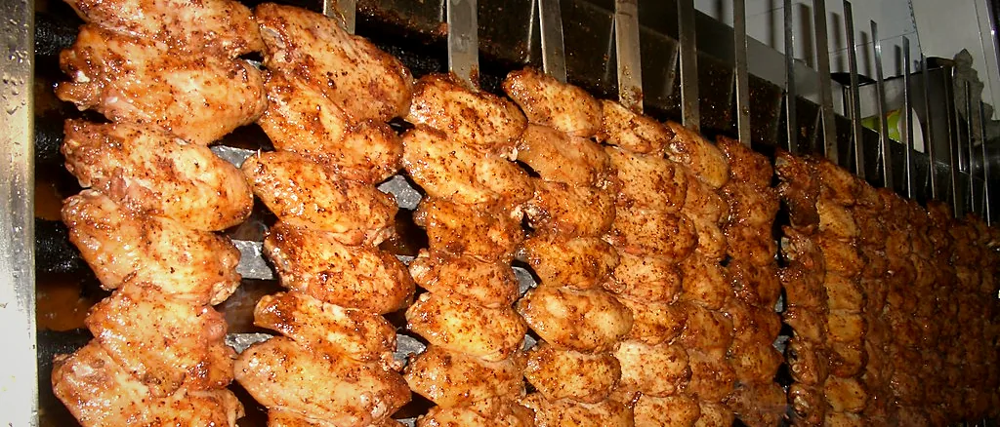
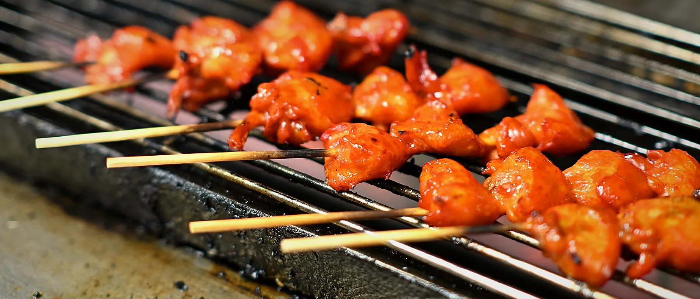
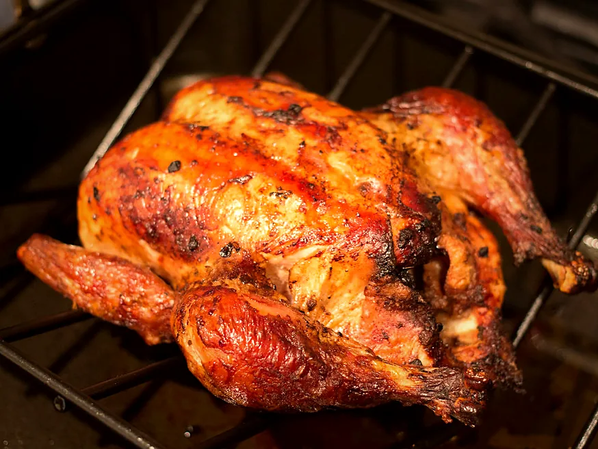
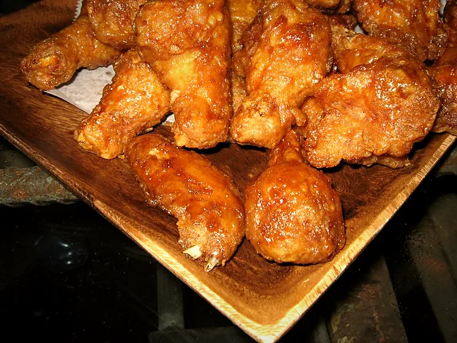
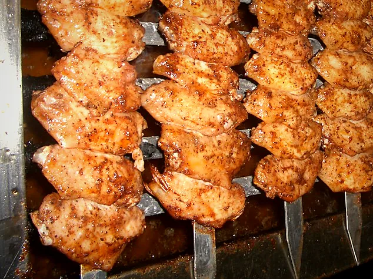
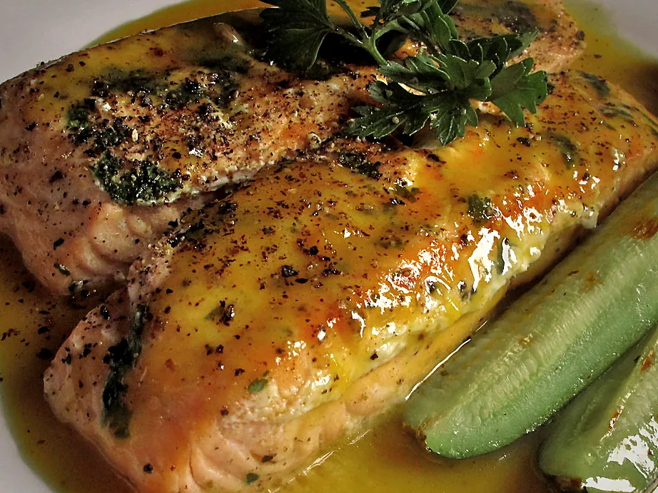

Créditos
Las fotografías y quién las hizo.
Las imágenes de esta web son fotografías de archivo con licencia Creative Commons, localizadas a través de Openverse. No son fotografías del establecimiento ni de los platos que se sirven en él: están ahí para dar idea del tipo de comida mientras se preparan las fotos propias. Abajo está la autoría y la licencia de cada una, como exige la licencia.
-

Chicken Wings on the Grill
-

DFC 5235- Charcoal-grilled skewers of juicy, marinated chicken sizzling to a perfect caramelized finish
-

pollo a la brasa
-

Bon Chon Korean Fried Chicken
-

Chicken Wings on the Grill
-

Grilled salmon with citrus sauce